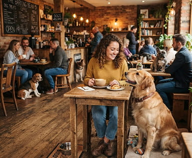
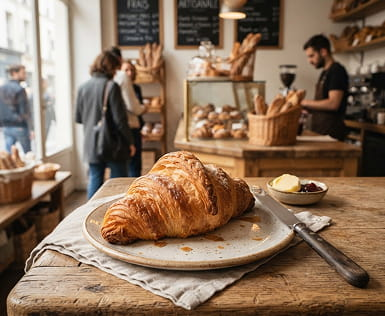
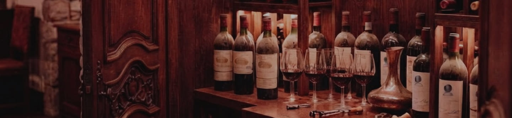

When you want to feel right at home, but out at a venue. You know the vibe, you're always welcome here.
A second living room – Kokvrån is a cozy little corner spot on Kärrtorp Square, almost at the very end of Metro Line 17 toward Skarpnäck. Our hope is that you'll want to swing by Kokvrån often, if not all the time. Whether it's for a grab-and-go coffee and sandwich before catching the subway to work, a leisurely breakfast when you have more time, lunch or a coffee break during the day, or a glass of wine on a Friday, you'll always find a reason to stop by.


